v.
Overview
- Basic concepts of unsupervised learning
- $K$-means algorithm
- Other issues to consider
Unsupervised Learning
ML Algorithms at a Glance (Recall)

Supervised vs. Unsupervised Learning
- Supervised learning: learn models or classifiers from the data that relate data attributes to a target class
- These models are then used to predict the values of the class in the test or future data instances
- Data + Label + Algorithm = Supervised Model
- Unsupervised learning: the data have no target/class
- We want to explore the data to find some intrinsic structures in them
- Data + Label + Algorithm = Unsupervised Model
Clustering
- Clustering is one main approach to unsupervised learning
- It finds similarity groups in data, called clusters
- It groups data instances that are similar to (near) each other in one cluster and data instances that are very different (far away) from each other into different clusters
- Clustering is often considered synonymous with unsupervised learning
- Example of unsupervised learning: association rule mining, blind signal separation, self-organising maps, etc.
An Illustration of Clustering

The dataset has 5 natural groups of data points, i.e. 5 natural clusters
Clustering Applications
- Example a: group people of similar heights together to make T-shirts with different sizes: small, medium, and large
- Tailor-made for each person: too expensive, exhausted
- One-size-fits-all: clearly bad idea
- Example b: segment customers according to their similarities in marketing
- targeted marketing (big companies already do this everyday!)
- Example c: organise a collection of books according to the content similarities
- produce topic hierarchy, genre etc.
- Clustering is one of the most utilised data mining techniques in practice
- Clustering has a long history and been used in almost every field, e.g. medicine, psychology, sociology, biology, archaeology, marketing, insurance, libraries, etc.
Clustering Aspects
- Clustering algorithm
- Partitional clustering
- Hierarchical clustering
- ...
- Distance function (similarity or dissimilarity)
- Clustering quality
- Inner-cluster distance $\implies$ maximised
- Intra-cluster distance $\implies$ minimised
- The quality of clustering result depends on the algorithm, the distance function, and the application
$K$-means Clustering
$K$-means Clustering
- $K$-means is a partitional clustering algorithm
- Let the set of data points (or instances) $D$ be $\{x_1, x_2, \dots, x_n\}$
- where $x_i=\{x_{i1},x_{i2},\dots,x_{im}\}$ is a vector in a real valued space $X \subseteq R^m$ and $m$ is the number of attributes (dimensions) in the data
- The $k$-means algorithm partitions the given data into $k$ clusters
- Each cluster has a cluster centre, called centroid
- $k$ is specified by user
$K$-means Algorithm
- Given $k$, the $k$-means algorithm works as follows:
- Randomly select $k$ data points (aka. seeds) to be the initial centroids (cluster centres)
- Assign each data point to the closest centroid
- Re-compute the centroids using the data points in each cluster
- If a convergence criterion is not met, go to step (2)
$K$-means Pseudocode
Algorithm k-means(k, D)
choose k data points as the initial centroids (cluster centres)
repeat
for each data point x ∈ D do
compute the distance from x to each centroid
assign x to the closest centroid
end for
re-compute the centroids using the latest cluster members
until the stopping criterion is metStopping/Convergence Check
- No (or minimum) re-assignments of data points to different clusters (stable)
- No (or minimum) change of centroids (fixed)
- Minimum decrease in the sum of squared error (SSE) $$SSE = \sum_{j=1}^k \sum_{\bm{x} \in C_j} dist(\bm{x,m}_j)^2$$
- $C_j$ is the $j$-th cluster, $\bm{m}_j$ is the centroid of cluster $C_j$ (the mean vector of all data points in $C_j$, and $dist(\bm{x,m}_j)$ is the distance between data point $\bm{x}$ and centroid $\bm{m}_j$
$K$-means Steps
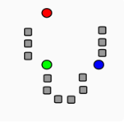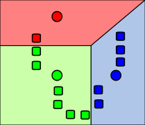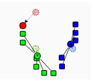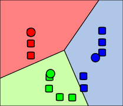
(1) randomly selected
$k$ means ($k$=3)
$k$ means ($k$=3)
(2) assign data points
to nearest cluster
to nearest cluster
(3) update centroids
to new means
to new means
(4) repeat (2) and (3)
until converge
until converge
Clustering Algorithm Extra
Cluster Representation
- Use the centroid (mean) of each cluster to represent the cluster
- Compute the radius and/or standard deviation if necessary
- The centroid alone works well if the clusters are of the hyper-spherical shape
- If clusters are elongated or are of other shapes, centroids are not sufficient
Non-hyper-spherical Dataset
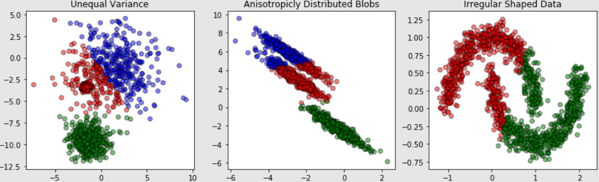$K$-means is not good at clustering with these types of datasets
Distance Function
- The $k$-means algorithm can be used for any application data set where the mean can be defined and computed. In the Euclidean space, the mean of a cluster is computed with: $$\bm{m}_j = \frac{1}{\vert C_j\vert}\sum_{\bm{x}_i \in C_j}\bm{x}_i$$
- where $\vert C_j \vert$ is the number of data points in cluster $C_j$
- The distance from one data point $\bm{x}_i$ to a mean (centroid) $\bm{m}_j$ is computed with: $$\begin{align*} dist(\bm{x}_i,\bm{m}_j) &= \Vert \bm{x}_i - \bm{m}_j \Vert \\ &= \sqrt{(x_{i\bm{1}}-m_{j\bm{1}})^2+(x_{i\bm{2}}-m_{j\bm{2}})^2+\dots+(x_{i\bm{m}}-m_{j\bm{m}})^2} \end{align*}$$
A Disk Version of $K$-means
- $K$-means can be implemented incrementally as the centroids calculation permits so - how?
- $\bm{m}_j = \frac{1}{n}\sum_{\bm{x}_i \in C_j}^{i=1,2\dots,n} \bm{x}_i \implies \bm{m}_{j+1} = \frac{n \times \bm{m}_j}{n+1}$
- It can be used to cluster large datasets that cannot fit in memory (data-on-disk)
- The number of iterations need to be defined
- In practice, $\lt 50$
- Not the best method as other scale-p algorithms exists, e.g. BIRCH (Balanced Iterative Reducing and Clustering using Hierarchies)
Strengths of $K$-means
- Simple: easy to understand and implement
- Efficient: time complexity is $O(tkn)$
- where $n$ is the number of data points, $k$ is the number of clusters, and $t$ is the number of iterations
- Note: since both $t$ and $k$ are small, $k$-means are considered as a linear algorithm
- $K$-means is the most popular clustering algorithm
- Note: it terminates at a local optimum if using SSE. The global optimum is (sometimes) hard to find due to complexity.
Weaknesses of $K$-means
- The algorithm is only applicable if mean can be defined
- For categorical data, $k$-mode - the centroid is represented by the most frequent values
- The user needs to specify $k$ - usually unknown for most problems
- Different initial random seeds lead to different results
- The algorithm is sensitive to outliers
- Outliers are data points that are very far away from other data points
- Outliers could be errors in the data recording or some special data points with very different values
Number of Clusters is Too Small
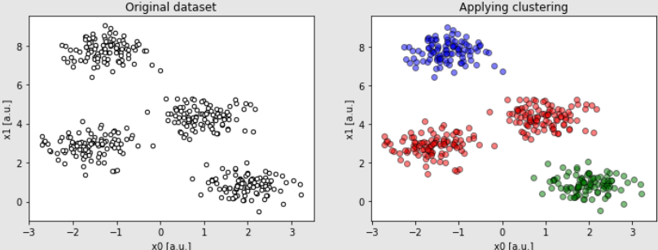Cluster: 4, given $k$: 3
Number of Clusters is Too Big
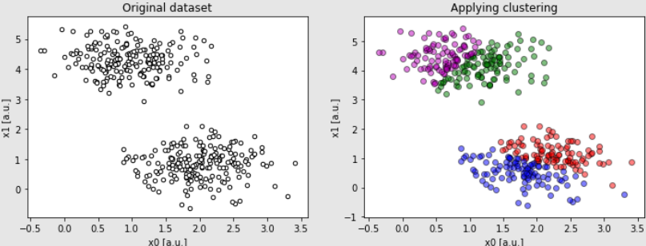Cluster: 2, given $k$: 4
Random Initial Seeds
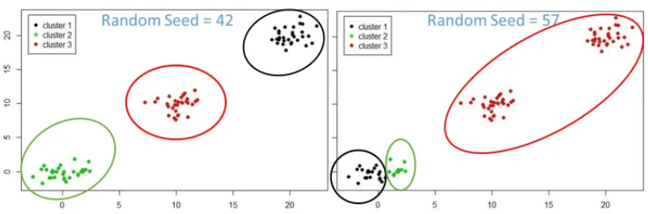Different seeds lead to different results
Hierarchical Clustering
Produce a nested sequence of clusters, called Dendrogram
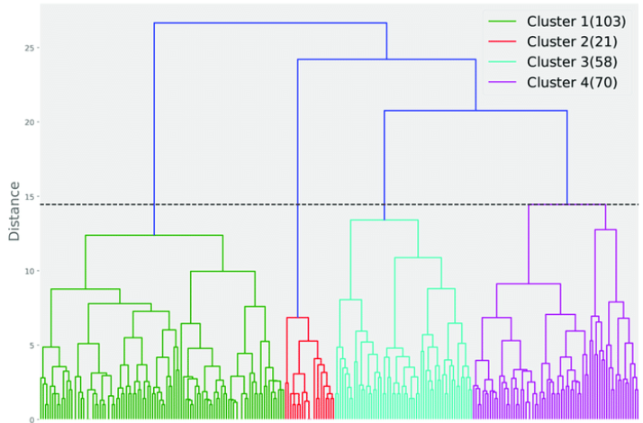There are two ways of creating dendrogram: bottom-up or top-down
Bottom-Up Clustering
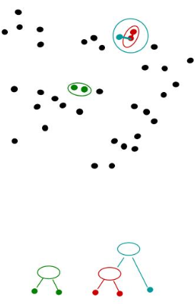- Starts building the dendrogram (tree) from the bottom$\qquad\qquad\qquad$
- Merges the most similar (or nearest) pair of clusters
- Stops when all the data points are merged into a
single cluster (i.e. the root cluster) or a chosen
number of clusters - Also called Agglomerative clustering
Top-Down Clustering
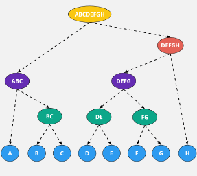- Starts with all data points in one cluster, the root
- Splits the root into a set of child clusters
- Each child cluster is recursively divided further
- Stops when only singleton clusters of individual data points remain (i.e. each cluster with only a single data point) or a chosen number of clusters
- Also called Divisive clustering
Summary
- Unsupervised learning problem
- The most popular clustering algorithm: $k$-means
Questions?